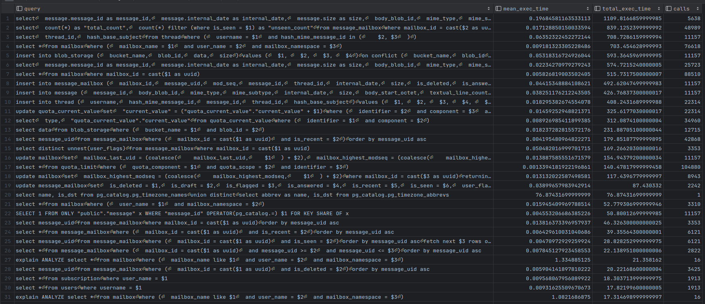

Postgresql James server benchmark
This document provides benchmark methodology and basic performance of Postgresql James server as a basis for a James administrator who can test and evaluate if his Postgresql James server is performing well.
It includes:
-
A sample Postgresql James server deployment topology
-
Propose benchmark methodology
-
Sample performance results
This aims to help operators quickly identify performance issues.
Sample deployment topology
We deploy a sample topology of Postgresql James server with these following components:
-
Postgresql James server: 3 Kubernetes pods, each pod has 2 OVH vCore CPU and 4 GB memory limit.
-
OpenDistro 1.13.1 as search engine: 3 nodes, each node has 8 OVH vCores CPU and 30 GB memory limit (OVH b2-30 instance).
-
RabbitMQ 3.8.17 as message queue: 3 Kubernetes pods, each pod has 0.6 OVH vCore CPU and 2 GB memory limit.
-
OVH Swift S3 as an object storage
-
PostgreSQL 16 as main database: 1 nodes (OVH instance, 2 CPU / 7 GB RAM, 160 GB SSD)
Benchmark methodology and base performance
Postgresql prepare benchmark
Install extension pg_stat_statements
The pg_stat_statements extension provides a means for tracking execution statistics of all SQL statements executed by a server.
The extension is useful for identifying high-traffic queries and for monitoring the performance of the server.
For more information, see the [PostgreSQL documentation](https://www.postgresql.org/docs/current/pgstatstatements.html).
To install the extension, connect to the database and run the following query:
create extension if not exists pg_stat_statements;
alter system set shared_preload_libraries='pg_stat_statements';
-- restart postgres
-- optional
alter system set pg_stat_statements.max = 100000;
alter system set pg_stat_statements.track = 'all';To reset statistics, use: select pg_stat_statements_reset();
The response fields that we are interested in are:
-
query: Text of a representative statement -
calls: Number of times the statement was executed -
total_exec_time,mean_exec_time,min_exec_time,max_exec_time
To view the statistics, run the following query:
select query, mean_exec_time, total_exec_time, calls from pg_stat_statements order by total_exec_time desc;The result sample:

Provision testing data
Before doing the performance test, you should make sure you have a Postgresql James server up and running with some provisioned testing data so that it is representative of reality.
We provision that data over IMAP with the james-provisioning tool: it creates mailboxes and appends messages into
already existing accounts. Message sizes follow a predefined distribution (1% carry a 10 MB attachment, 4% a 5 MB one,
5% a 1 MB one, 10% a 500 KB one, the rest are small sized), which averages roughly 400 KB per message.
Create the test users
The provisioning tool does not create accounts: create them first with WebAdmin, and record their credentials in a CSV
file (one username,password per line) that both the provisioning tool and Gatling will later reuse.
Retrieve the generated WebAdmin password from the James startup logs and expose it to your shell. Omit this variable only when WebAdmin password authentication is explicitly disabled:
export WEBADMIN_PASSWORD="replace-with-generated-webadmin-password"
WEBADMIN_BASE_URL="http://localhost:8000"
DOMAIN_NAME="domain.org"
USERS_COUNT=1000
curl --fail --header "Password: ${WEBADMIN_PASSWORD}" -XPUT ${WEBADMIN_BASE_URL}/domains/${DOMAIN_NAME}
for i in $(seq 1 $USERS_COUNT); do
username=user${i}@${DOMAIN_NAME}
curl --fail --header "Password: ${WEBADMIN_PASSWORD}" -XPUT ${WEBADMIN_BASE_URL}/users/${username} \
-d '{"password":"secret"}' -H "Content-Type: application/json"
echo "${username},secret" >> users.csv
doneNormally, to make the performance test representative, you should provision thousands of users, thousands of mailboxes and millions of emails.
Run the provisioning
Adapt provisioning.properties upon your need (URL of the server, number of mailboxes and emails to be provisioned,
concurrency):
# IMAP(S) URL of the James server. Certificates are blindly trusted
url=imaps://localhost:993
# Count of mailboxes to create per user
mailbox.count=4
# Count of messages to create per folder
message.per.folder.count=5
# Count of messages to create in INBOX
message.inbox.count=5
# Count of threads of the IMAP client
thread.count=8
# Concurrent count of users to provision simultaneously
concurrent.user.count=10
# Connections to use per user
connection.per.user.count=2
# Read timeout of IMAP connections
read.timeout.ms=180000
# Connect timeout
connect.timeout.ms=30000
# Count of users to offset (ignore) in the provisioning
users.offset=0
# Count of users to provision
# users.limit=100provisioning.properties and users.csv are read from the working directory of the container (/provisioning), so
both are meant to be mounted:
docker run --rm --network host \ -v $PWD/provisioning.properties:/provisioning/provisioning.properties:ro \ -v $PWD/users.csv:/provisioning/users.csv:ro \ linagora/james-provisioning:latest
JVM options can be passed through JAVA_TOOL_OPTIONS, for instance -e JAVA_TOOL_OPTIONS=-Xmx2g.
Provide performance testing method
We introduce the tailored James Gatling which bases on Gatling - Load testing framework for performance testing against IMAP/JMAP servers. Other testing method is welcome as long as you feel it is appropriate.
The easiest way to run it is its Docker packaging, which ships the simulations along with their sbt toolchain.
-
Get the runner image, either from Docker Hub:
docker pull linagora/james-gatling-runner:branch-master
Or build it from the sources of James Gatling - the build context is the root of the project, so that the image ships the code being built:
docker build -f dockerfiles/docker-runner/Dockerfile -t james-gatling-runner .
-
Point the runner to your Postgresql James server IMAP/JMAP server(s) with an environment file. Start from the
sample.envof the project:
IMAP_SERVER_HOSTNAME=james.example.com
IMAP_PORT=993
IMAP_PROTOCOL=imaps
# Count of virtual users, and injection duration in minutes
USER_COUNT=1000
DURATION=60
# Force the run to terminate after that many minutes, even if some virtual users are still running
MAX_DURATION=120-
Supply the test users: reuse the
users.csvwritten when provisioning, prepending theusername,passwordheader line that Gatling expects. -
Run a simulation. Mounting
target/gatlingkeeps the generated HTML reports on your host once the container exits:
docker run --env-file sample.env \
--mount type=bind,source="$(pwd)"/users.csv,target=/home/sbtuser/james-gatling/src/test/resources/users.csv \
--mount type=bind,source="$(pwd)"/results,target=/home/sbtuser/james-gatling/target/gatling \
-it --rm linagora/james-gatling-runner:branch-master SIMULATION_FQDN
In there: SIMULATION_FQDN is fully qualified class name of a performance test simulation. Omitting it drops you into an
sbt prompt inside the container, from which you can run gatling:testOnly SIMULATION_FQDN interactively.
We did provide a lot of simulations in org.apache.james.gatling.simulation path. You can have a look and choose the suitable simulation.
org.apache.james.gatling.simulation.imap.PlatformValidationSimulation is a good starting point. Or you can even customize your simulation also!
Some symbolic simulations we often use:
-
IMAP:
org.apache.james.gatling.simulation.imap.PlatformValidationSimulation -
JMAP rfc8621:
org.apache.james.gatling.simulation.jmap.rfc8621.PushPlatformValidationSimulation